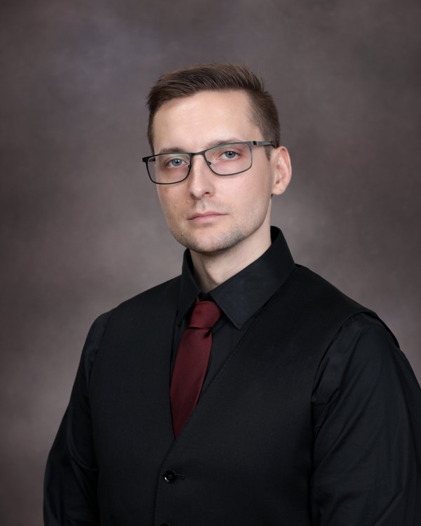

Bachelor of Science in Applied Cybersecurity
Graduated from SANS Technology Institute. The BACS degree emphasizes applied security, incident response, hands-on technical practice, and professional development.
SANS degree details ↗My path into cybersecurity includes military aviation, network administration, threat intelligence, and enterprise security engineering.

I am a graduate of SANS Technology Institute, holding a Bachelor of Science in Applied Cybersecurity. My background combines U.S. Navy service, hands-on IT operations, threat intelligence, and enterprise cybersecurity work. My interests include security engineering, vulnerability analysis, reverse engineering, detection logic, and automation that makes technical teams more effective.
I served in the U.S. Navy as an Air Traffic Controller from 2013 to 2023. The experience emphasized procedural discipline, situational awareness, teamwork, and clear decision-making under pressure.
In technology, I have worked in network administration, Tier 2 counter-threat intelligence, and IT operations. More recent projects include identity security controls, endpoint application policy, secure browser configurations, and investigating authentication-related alerts.
I use GregoGuard to publish research notes: what I tested, what the tools showed, and how I checked the result.
Graduated from SANS Technology Institute. The BACS degree emphasizes applied security, incident response, hands-on technical practice, and professional development.
SANS degree details ↗Additional university studies alongside military service, including computer science coursework that supported my technical foundations.
Programming, desktop software experiments, creative projects, and technical learning are recurring themes in my work. I value hands-on problem solving and clear technical communication.